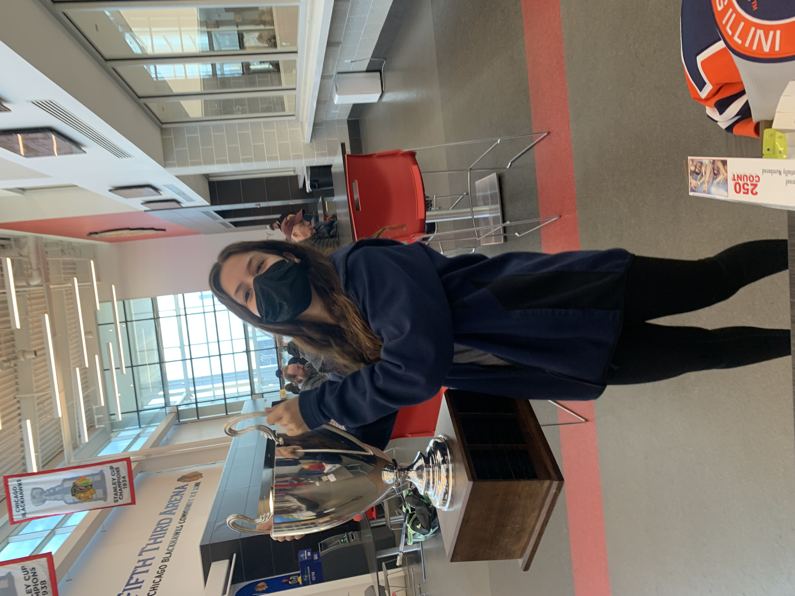
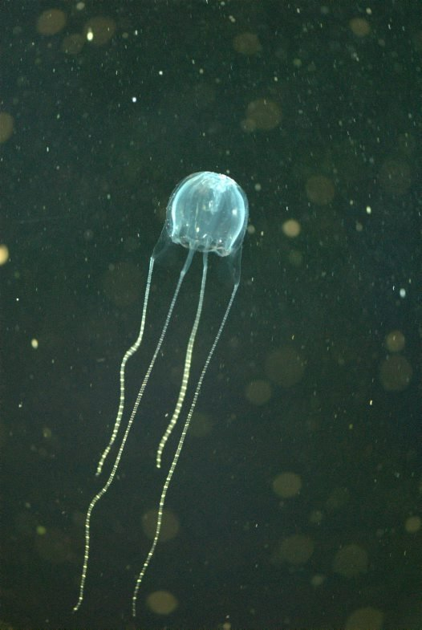
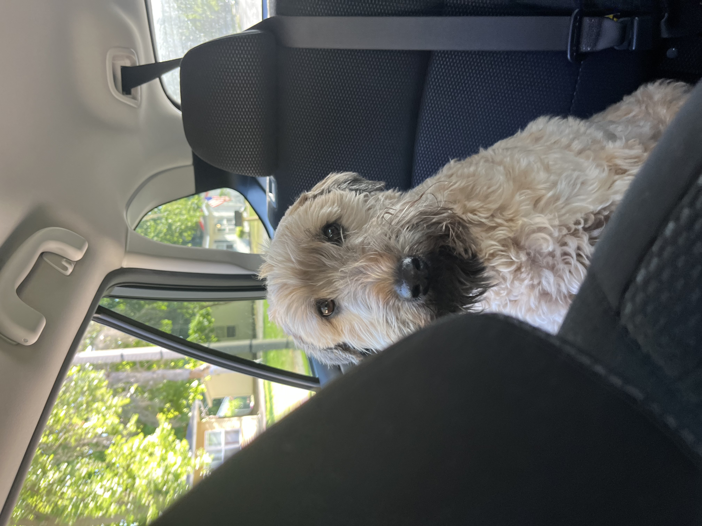
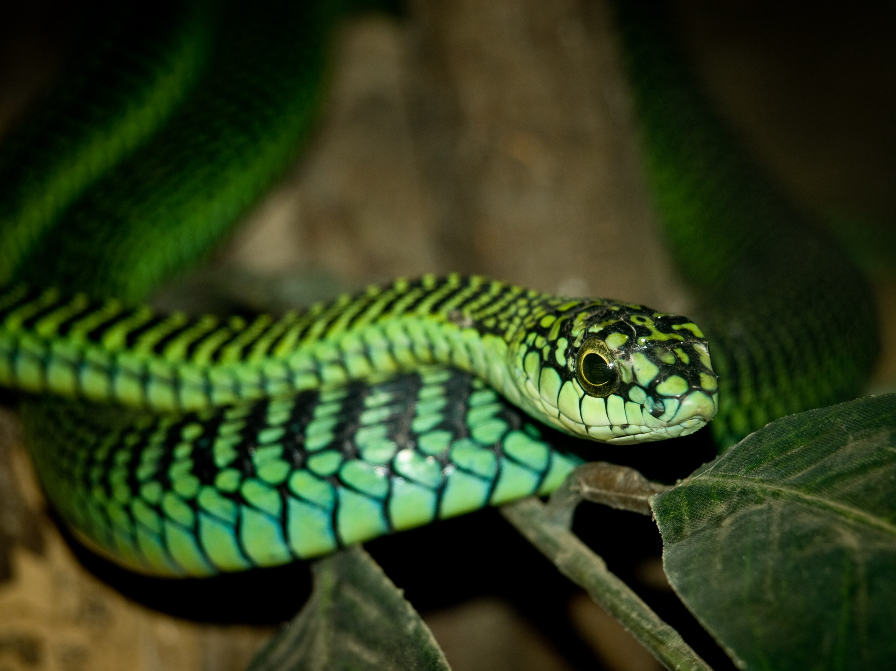

Resume
-
Education
- Gonzaga University
- Graduation: May 2024
- GPA: 3.81
- University of Illinois at Urbana-Champaign
- August 2019 to December 2021
- GPA: 3.45
- Gonzaga University
-
Experience
- Director of Gameday Operations, University of Illinois Hockey Team (September 2019 to March 2022)
- Managed the team's online ticketing platform, which included page development, and oversaw all ticket sales at home games, selling over 750 tickets per game and handled more than 7500 dollars each weekend.
- Worked with the Ice Arena employees, Ice Girl club, and my own employees to delegate game day duties, such as ticket sales, national anthem duties, and merchandise sales.
- Represented the team for all fan, ticketing, and equipment issues, which required me to manage the problems quickly, have quick and consistent communication, and have in-depth knowledge on all aspects of the team.
- Inputted home game statistics into the ACHA organizational database, as well as created game pamphlets for spectators, which includes statistics and informational write-ups on multiple teams and required contact with opposing team's staff and coaches.
- Head Counselor, Stephen's Family YMCA (June 2019 to August 2021)
- Supervised my own group of over 30+ children and 7+ staff members in on and off-campus excursion, which included working with transportation staff and external companies.
- Implemented given schedules and guidelines in a timely manner to foster an organized camp environment.
- Acted as main point of contact for parents and guardians for children in my group, ensuring direct and effective communication to their families for behavioral issues and program updates.
- Encouraged a positive camp environment by establishing trusting relations with the campers and counselors under my lead, as well as handling conflict between staff members and/or children in my group.
- Director of Gameday Operations, University of Illinois Hockey Team (September 2019 to March 2022)
-
Skills
- Technical Skills
- Database design and development
- Entity-relationship diagramming
- Structured query language (SQL)
- Excel Solver, PivotTables and Charts
- HTML, CSS, and Bootstrap
- Competent in Microsoft Office platforms
- Basic in coding on Python and MATLAB platforms
- Competent in the Autodesk Fusion 360 platform
- Languages
- Competent in verbal Spanish and proficient in auditory and visual Spanish
- Basic in verbal, auditory, and visual Italian
- Certification
- The American Red Cross First Aid and CPR certified (2020)
- Core IRB and IACUC certified (2020)
- Musical Training
- Advanced training in classical piano (12 years)
- Jazz and traditional singer in multiple bands (6 years)
- Technical Skills
Fun Facts and Interests
- I enjoy watching college sports and have worked for a college hockey team in the past. This upcoming year I will be on the Kennel Club Board to continue my sports' involvement. 
- I know much about animals, specifically poisonous and aquatic animals. My favorite animals are the irikandji jellyfish and the boomgslang, which is species of snake. 
- I have a dog named Chachi. He is 11 years old and is a Wheaton Terrier. A fun fact about him is that he is allergic to almost everything and has to eat kangaroo meat kibble. 
- I like to spend my freetime watching sitcoms and listening to true crime and paranormal podcasts.

Video
Another one of my interests are sharks. Here is one of my favorite shark videos for your viewing.